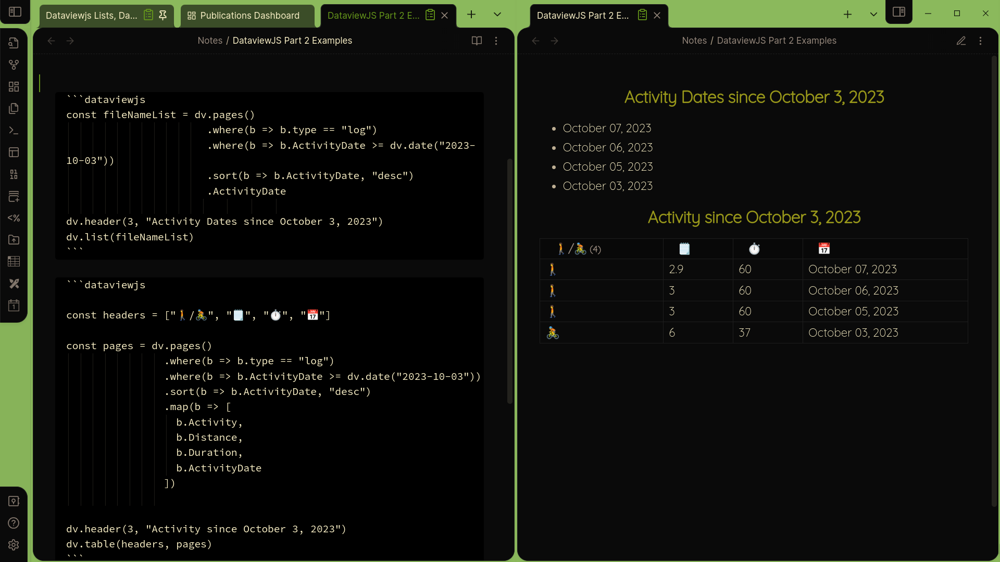

DataviewJS: Selecting Files, Working with Dates
Selecting files
This article follows an earlier article introducing DataviewJS, which I strongly encourage you to read first. In that article, we learned how to display basic lists with Dataview. In this article, I will cover displaying lists of files in your vault and information in those files. I will also discuss using date ranges in queries and sorting results. Finally I will show how to make a table with multiple fields.
As a refresher, to show a list with a header you typed something like
const myList = [
"First",
"Second",
"Third"
]
dv.header(3, "My List")
dv.list(myList).
This creates a variable with a camelCase name. The variable contains a list, surrounded by square brackets, separated by commas, with quotations around strings (text). That was easy.
Now what if I want to list all the files in my vault? I won’t do this, because the list would be crazy long, but just say I did. I would use
const fileNameList = dv.pages().file.name
dv.header(3, "Log files")
dv.list(fileNameList)This would give me a bullet-point list of the names of all of the files in my vault. If you don’t have too many files in your vault, go ahead and try. Before narrowing it down to something more specific, let’s look at what is new here. What is pages().file.name? And for that matter, what’s with all the periods?
Let me explain the periods first. I said that dv is an object. Objects can contain functions, like list(). They can also contain values, often called attributes. The functions and attributes of any object are referred to or accessed by using the name of the object, followed by a period, and then the name of the function or attribute. So the phrase above means: dv is an object that contains a pages() function (the parentheses let you know it is a function). The pages() function selects certain pages and provides attributes for each page, such as the name, links, date created, date modified, etc., in an object called file. In this case I’m choosing to show just the file name. If I wanted links instead, I would do dv.pages().file.link.
This dot-notation, using periods, is actually quite nice when you get used to it. Recall that “white space”, including line breaks, is not important in JavaScript, so you will see me often using line breaks before these periods, purely for readability and ease of editing.
So let’s see how to narrow things down a little. For the following examples I will use my exercise logs. All the log files are linked to a file called Logs. I can select files that link to this Logs file by writing pages("[[Logs]]"). Note the quotations AND double square brackets. So I can write:
const fileNameList = dv.pages("[[Logs]]").file.link
dv.header(3, "Log files")
dv.list(fileNameList)I suggest you create some log files in your vault so that you can follow along. Each file should contain, at least, the following fields, some of which we won’t use until we look at tables:
topic:: [[Logs]]
type:: log
Activity:: 🚶
Duration:: 60
Distance:: 3
ActivityDate:: 2023-10-05I use 🚴 as the other activity type. After creating some log files, and the Logs file itself (this file can be empty for now), go ahead and try the JavaScript. You can use this technique to retrieve files on any topic in this way, assuming you have a topic field with the link (really you only need there to be a link).
Sorting
Let’s look at some ways we can modify this snippet to make it more useful. First, if you have tried this, and have created log files with various dates, you may notice that they aren’t necessarily displayed in any particular order. I want to make sure they are ordered by the activity date. The pages() object contains a number of functions allowing us to work with data, and sort() is one. sort() takes two arguments, first the name of the field to sort on, and a second argument specifying the sort order, either "asc" or "desc", for ascending or descending order, respectively.
Unfortunately, we can’t just add .sort(ActivityDate, "desc"). When working with pages() we need to use a special JavaScript syntax. We need to type .sort(a => a.ActivityDate, "desc"). The letter a is arbitrary. I could also write .sort(foo => foo.ActivityDate, "desc") to achieve the same thing. a, or foo, basically serves as temporary variable name for the object you are working with, in this case the page, or note. Then the command says to use the ActivityDate property on each page for sorting. I know it looks a little confusing at first, but you will see this idiom so frequently you will quickly get used to it.
So lets sort our logs by date as so:
const fileNameList = dv.pages("[[Logs]]")
.sort(b => b.ActivityDate, "desc")
.ActivityDate
dv.header(3, "Activity Dates")
dv.list(fileNameList)Notice how the dot notation allows us to easily add more conditions to our query. ## Selecting by date
Next, let’s see how we can select logs only for certain dates. To do that, we use the .where() function supplied by pages(). To see only logs since October 3, 2023, I can write
const fileNameList = dv.pages("[[Logs]]")
.where(b => b.ActivityDate >= dv.date("2023-10-03"))
.sort(b => b.ActivityDate, "desc")
.ActivityDate
dv.header(3, "Activity Dates since October 3, 2023")
dv.list(fileNameList)The syntax for where() is similar to the syntax for sort(). There is an important difference though, because here we are comparing two values. >= means “greater than or equal to”, <= would be “less than or equal to”, etc. This evaluates to either true or false, since the date is either earlier or later than 10/3. This type of true/false value has a special name, boolean, which is good to know. dv provides its own .date() function for simple date manipulation, and I use it here.
Now that you know how to use where(), let’s do one more thing with it. The code currently takes advantage of the fact that all the logs are linked to the Logs note. I don’t like that, because I might create some logs with a different topic. You may have noticed that all of the log notes have a type:: log. This can be used with .where(), so I can instead write:
const fileNameList = dv.pages()
.where(b => b.type == "log")
.where(b => b.ActivityDate >= dv.date("2023-10-03"))
.sort(b => b.ActivityDate, "desc")
.ActivityDate
dv.header(3, "Activity Dates since October 3, 2023")
dv.list(fileNameList)Many of my queries are based on the type of note, and this is how the note type can be used. Pay attention to the fact that “equal to” requires two equal signs, not one. For completeness, “not equal to” is written !=.
A first table
Lists aren’t very interesting, though. Usually you want more than just the name, or one bit of information from a file. So let’s make a table instead with dv.table(). For tables, you must supply an additional list with the column headers. Then you specify the fields that you want using a JavaScript function called map(). It works pretty much the same way as .sort and .where(), it just has a seemingly odd name. map() is used to go through each item in a list and do something with it, in this case, select certain fields from each note. This is called iteration.
This table shows the type of activity, distance in miles, duration in minutes and date. I’ve used emojis for column headings. You can see that the fields I want shown are supplied as a list (between square brackets) of the fields I want in the table.
const headers = ["🚶/🚴", "🗒️", "⏱️", "📅"]
const pages = dv.pages()
.where(b => b.type == "log")
.where(b => b.ActivityDate >= dv.date("2023-10-03"))
.sort(b => b.ActivityDate, "desc")
.map(b => [
b.Activity,
b.Distance,
b.Duration,
b.ActivityDate
])
dv.header(3, "Activity since October 3, 2023")
dv.table(headers, pages)
Next steps
In the next article I will look at how to make this table dynamic, allowing you to change values directly in the table. I will also talk about relative dates, eg. activity over the last 10 days, or in the 10 days prior to that, or before a certain day but after another day.
Before moving on, I strongly encourage you to work with the material covered so far by adding some metadata to your existing notes and creating some queries. I don’t use tags (for now), but if you do, you could do pages("#some/tag") instead of pages("[[Logs]]"). Maybe you have a tag, #fleeting, for example. You could make a list of all your fleeting notes with pages(#fleeting).
Finally, if you have been reading my Freeing Your Thinking series you may already be doing these examples on a canvas instead of in a note. If you aren’t I encourage you to do so. You can put the code directly into cards on a canvas. Then you can easily see all of your tables in one place, and convert them into notes if you so desire (but why?). Since the end goal will be to have dashboards to view and manage things, you might as well start now. If you have multiple tables on the same canvas, you might want to increase the Refresh Rate in the Dataview settings to prevent the canvas from being too “jumpy” while you type. The default is 2500ms (2.5 seconds). I find that 5 seconds (5000ms) works pretty well for me and the speed I type.
Happy coding!
Citation
@online{carey2023,
author = {Carey, Brian},
title = {DataviewJS: {A} {Gentle} {Introduction} {Part} 2},
date = {2023-02-28},
url = {https://biscotty666.github.io/biscottys-workshop/2024-02-28-trail-mapping-with-python},
langid = {en}
}